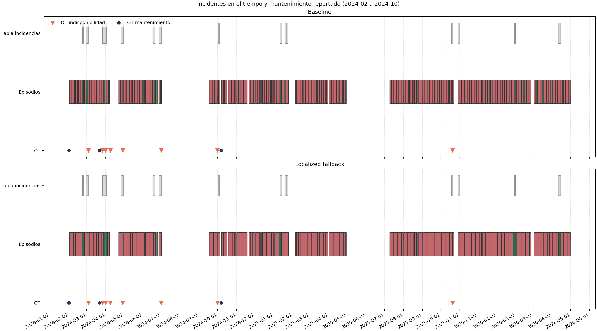
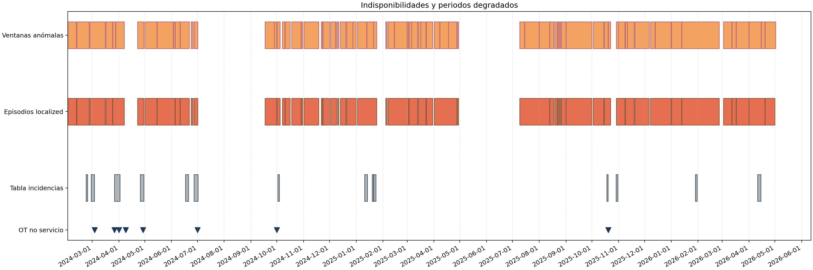
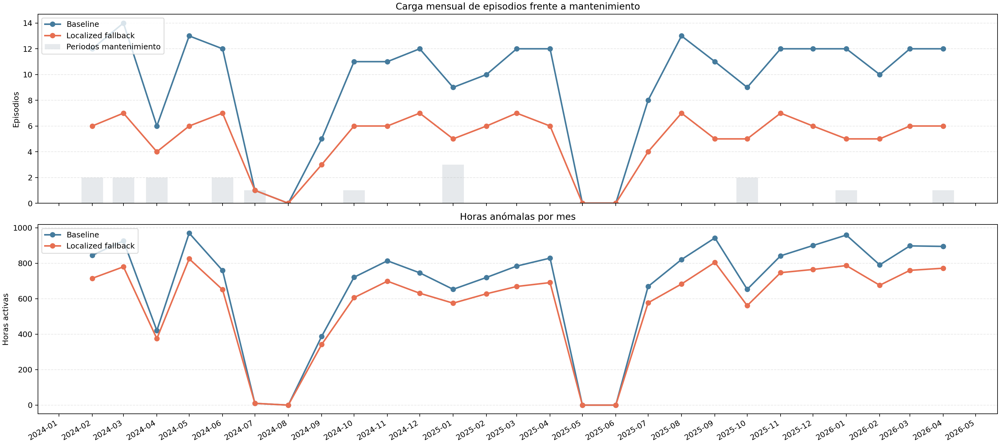

Horizonte analizado: del 1 de febrero de 2024 al 30 de abril de 2026.
| variant | episode_count | median_duration_hours | maintenance_period_hits | maintenance_period_total | ot_point_hits_pm24h | ot_point_total |
|---|---|---|---|---|---|---|
| baseline | 242 | 89.0 | 14 | 14 | 10 | 11 |
| localized_fallback | 127 | 109.0 | 14 | 14 | 10 | 11 |


